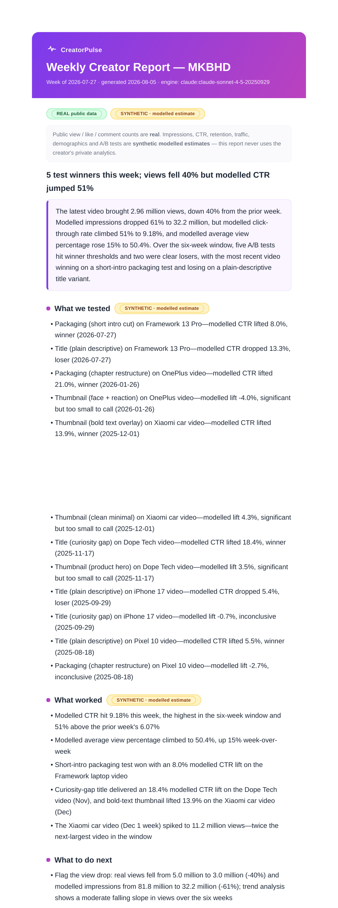
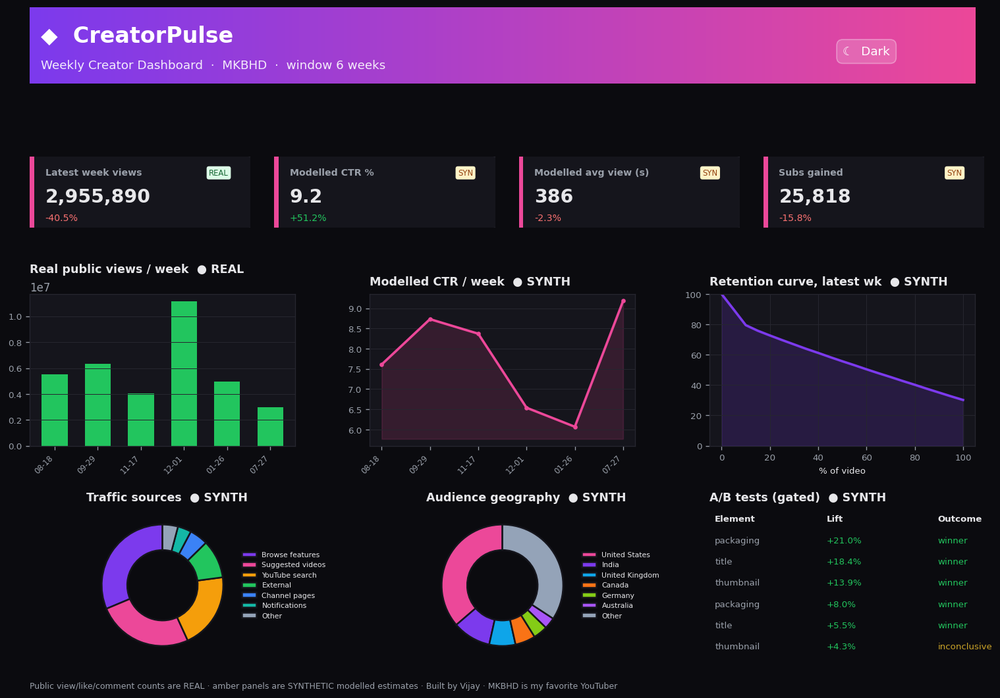

Real public data + a clearly-labeled synthetic analytics layer. A plain-English report an account lead can hand straight to a creator — with a second AI pass that fact-checks every number.
Click either card to open the real, generated output.

Plain-English narrative: what was tested, what worked, what's next — with flagged trends and anomalies. Exports to HTML + PDF.

Dark/light toggle, KPI cards, week-over-week charts, retention curve, A/B results, traffic and audience breakdowns.
The latest video brought 2.96 million real views, down 40% from the prior week. Modelled CTR climbed 51% to 9.18% and modelled average view percentage rose to 50.4%. Five A/B tests cleared the winner threshold; two were clear losers.
Every number above was checked by a second Claude pass against the source data before this report was published.
A creator's public data (views, likes, titles, dates) is pulled live via yt-dlp and marked REAL. Owner-only analytics (impressions, CTR, retention, demographics, A/B tests) can't be accessed publicly, so they're generated, calibrated to plausible ranges, and marked SYNTHETIC everywhere — in the report, the dashboard, and the code. The tool never implies access to private analytics.